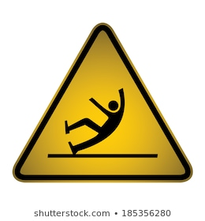

A risk accepted as a consequence of a particular
occupation.A hazard is anything that could cause harmful adverse effects. These effects can be on structural buildings, machinery/equipment, or individuals.An Occupational Hazard is the risk involved on pursuing any occupation.Occupational accidents and work-related diseases remain a relatively uncovered domain in global literature. As a result of occupational accidents or work-related diseases globally attribute to more than 2.78 million deaths and 374 million non-fatal injuries . The consequent losses in production and work time amount to nearly 4% of the gross national product even before the twenty-first century without any reduction up to date
Types of occupational Hazard
W3.CSS
Hazards Involved in Textile Industry

In 2014 to 2016, registered Surat textile units clocked 84 fatal
accidents in which 114 fatalities and 375 serious injuries to workers were reported .
The cause for the deaths included
asphyxiation, fall from heights, mechanical injuries, injuries from material handlings and fiber and cotton dust inhalation.
Hazards Involved in Mineral Industry
Among some groups of miners who live together in isolated locations, there
is also risk of transmitting some infectious diseases such as tuberculosis, hepatitis (B and E), and
the human-immunodeficiency virus (HIV). Miners’ exposure varies with the job, its proximity to the
source of hazards and the effectiveness of hazard control methods.
Hazards Involved in Silk Industry
Various types of occupational disorders are associated with silk industry such as,
respiratory disorders, injuries, eyesight problems, nerve disorders, and carcinogenic skin problems. Most of these health
risk factors can be avoided by proper precautions.
Hazards Involved in Wool Industry
Some of the health
hazards faced by wool industry workers are: Respiratory diseases like asthma, bronchitis etc., are very
common among these workers. ... Other health problems include headache, fever, back pain, neck pain etc.
Hazards Involved in Spices industry
1Spices have been known for their various health activities; however, they also possess
the allergic potential for the respiratory system and the skin as they are fine particulate matter. Persons involved
in spice agriculture and food industries are at greater risk since they are exposed to a considerable amount of
combustible dust, which may be the cause of fire and explosion and adversely affect the health. These workers may
experience allergy, long-term and short-term respiratory issues including occupational asthma, dermatitis, etc.